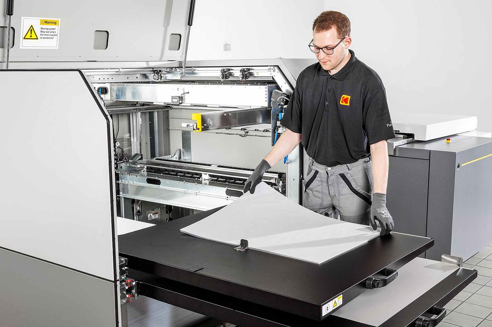

CTP
Direct digital plate preparation with stronger prepress control.
Computer-to-plate converts approved digital artwork into offset printing plates. This removes film negatives and supports cleaner prepress accuracy, consistency and control before printing starts.
Our in-house setup removes film negatives and keeps plate preparation fully digital.
Plate imaging is managed for stronger detail reproduction and more stable print preparation.
Production is aligned with industry standards and client specifications for required quality output.
